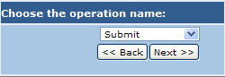
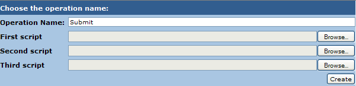

This step is shown to the user when the service implements an interface stored in the Interface repository of Toolbox. Through this interface a list of operations is shown and the user can implement one of these simply selecting it and clicking on Next. The next step (shown below) asks the user to add all scripts needed for executing the operation.

The number of scripts requested depends on the operation type (synchronous or asynchronous). When all scripts have been set, click on "Create" to finalize the operation. The page is then refreshed and the configuration page is shown.